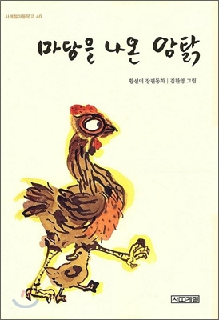

마당을 나온 암탉
메인
등장인물
줄거리
도서정보

『마당을 나온 암탉』은 알을 품어 병아리의 탄생을 보겠다는
소망을 굳게 간직하고 자기 삶의 주인으로 살아가는 암탉 잎싹의 이야기이다.
양계장에서 주는 대로 먹고 알이나 쑥쑥 낳아 주면서 살면 얼마나 편할까.
하지만 그렇게 사는 건 암탉으로서의 삶이 아니라고 잎싹은 생각한다.
그래서 잎싹은 배불리 먹을 수 있는 양계장과 안전한 마당을 나와 버린다.